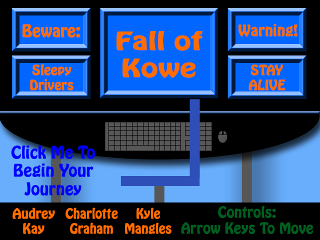

This game is extremely awesome and we hope you enjoy playing it.
Fall Of Kowe
Contributors
Audrey Kay, Charlotte Graham and Kyle Mangles
This game is extremely awesome and we hope you enjoy playing it.
Audrey Kay, Charlotte Graham and Kyle Mangles